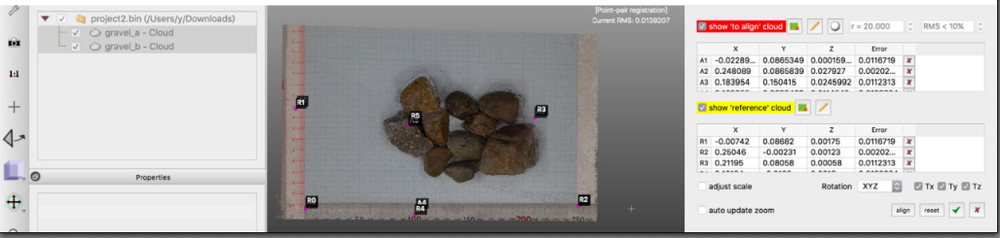
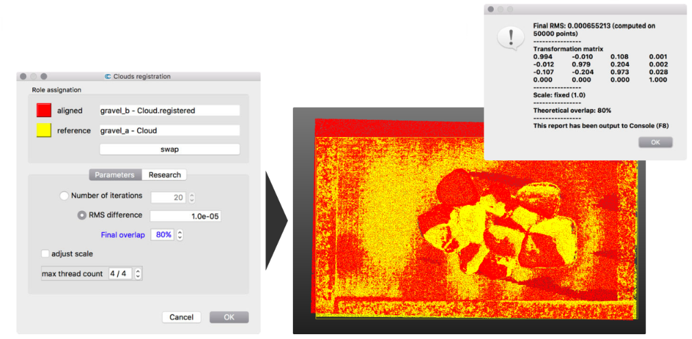
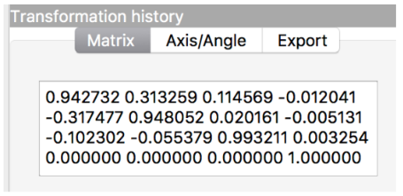

レジストレーション
2つの点群の読み込み

点群の位置合わせ方法
- 手作業での移動（不正確）
- 対照点に基づく位置合わせ
- 自動位置合わせ
（ICP: Iterative Closeset Point）
- 事前におおまかに位置合わせができている前提
対照点に基づく位置合わせ
- 二つの点群を選択（Shift+クリック）
- Tools > Registration > Align (point pairs picking)
- gravel_aを基準（Reference）に ←Swap
- 同一の点を4～6箇所選択（左クリック）
- 特徴的な点（物の角など）を選択
- なるべく点群全体、広範囲、Z方向にも様々に
- 移動と基準の点群をそれぞれ個別に表示し、同じ順で特徴点を選択
- show ‘to align’ cloud / show ‘reference’ cloud
- 視点変更・ズームインなどでなるべく正確に選択
- ただし、あとで自動位置合わせをする前提では大まかでもOK

- ‘align’をクリック→結果のプレヴュー
- エラーの確認
- エラーの大きい点の除去、他の対照点の追加
☑→確定 - RMSの表示
- エラーの大きい点の除去、他の対照点の追加
- その他オプション
- ‘adjust scale’：スケールを変更してもよい場合
- ‘Rotation’：軸を固定可能（水平が取れている等）
- 外部の参照点（GCP）座標も入力可能

自動位置合わせ（ICP）
- 二つの点群を選択（Shift+クリック）
- Tools > Registration > Fine registration (ICP)
- gravel_aを基準（Reference）に ←Swap
- “overlap” 変化を加味して80%

- 「不変箇所」のみに適用
- 複製（！）
- セグメンテーション後の点群でICP
- →変換行列を元の点群に適用する

- 変換行列（Transformation Matrix）
- プロパティ画面
- Export > Clipboard

- 変換前の元の点群を読込
- gravel_b.laz
- 変換行列を適用する
- Edit > Apply transformation > clipboard